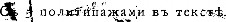
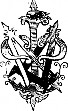
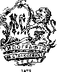

< Назад | Содержимое | Далее >
Учеовики составленные по novyqeнiю Лепаvтажента 3емледtлiя :и..;...-
Jвльской nvомышленности.
ОБЩЕЕ
Щ'ИВОТНОВОДСТВО
Петровской Зе11леАtльческой Ак' 'де11jи.


С.-ПЕТЕРВУРГЪ.
ИЗДАНIЕ А.Ф. ДЕВРIЕНА
1888.

Н79
О ГЛ А В JIЕ Н I Е.
Вве.цевiе . . . . . . . . . . . . . . . . . . . . .
Три фазы въ развитiи скотоводства, 1. Предметъ животно водства и его подраздiшевiе, 5.
Уч:еиiе о кор:м:Jiеиiи.
:Кратк1й историческiй очервъ учеиiя о ворилевiи 6
.Сtнные эквивl!,де!]ты, (>. - Цормы nитатедьвыхъ, по Грувеву, 14.
веществъ
Опредfl.rевiя переваримости вориовыхъ проду:в:товъ и ихъ rлав- вflйшiе реsу.rьтаты 16
Неполная переваримость nротеиновыхъ веществъ, безазо тистыхъ экстрактивныхъ соедивевiй и жира, 17. Переваримость клtтчатки, 17 - :Компевсацiл, 17. - Переваримость кормовыхъ nродуктовъ различными сельско-хозлйствеввыми животными, 18.
Влiявiе раs.rичвыхъ ус.rовiй иа составъ и переварииость вор- иовыхъ продуктовъ 19
Влiлнiе- почвы, удобревiл и погоды во время растительваrо
-перiода, 19.
Pasдflлeиie вормовыхъ продуктовъ . . . . . . . . . 21
А.. :Кормовые продукты растителъпаrо происхож.цеиiя.
Хииическiй составъ вормовыхъ средствъ. . .
· Азотистыл вещества, 21. - Безазотистыл Миверальныл coJIИ, вода, 24.
Дflлепiе растительпыхъ вормовыхъ продувтов-ь
1 rруппа: rрубый или объемистый кормъ .
3еJ1евый :в:ормъ . . . . .
Способы заrотовви корма па sиму. . . .
21
вещества, 23. -
25
25
25
26
п
ОrРлн.
В.в:iяпiе во8раста растепiй па пхъ химическ_iй составъ и пере-
вари11ость ....... . 26
С ко. . . . . . . . . . . . . 27
3eJieнoe сtно, 27. - Потери при высуmиванiи, 28. - Бурое сtно, 29.-Способъ Ншrьсона, 30.
Си.в:осоваппый кормъ . . . . . . . . . . . . . . • . . • 31
Сладкое силосованiе, 31. - Потери питательныхъ веществъ при силосованiи, 32.-Употребленiе силосованнаrо в:орма, 38.
3е.в:епый корм:ъ и с по вsъ двкопроиsростающихъ травъ 42
Вотаническiй составъ, 43.-Признаки, ПО которымъ судлтъ о доброкачественности сtна, 44. - Оtно съ пое11шыхъ луговъ, 45.-Сtно съ суходольныхъ луговъ, 45.-Болотное, 45 и лtсное сtно, 45.-Горное cilнo, 46.-Степные пастбища и сtнокосы, 46.
3е.в:епый вормъ и сfшо иsъ пос вяыхъ травъ . 49
Листья и ботва 50
Гу11еппьiй хорм:ъ 51
Солома, 51.-Солома ржаная, rrшеничнал, овслнал: и Л:'11\ШН
нал, 51.-Прослнал, 52 и гречневал солома, 52.-Соло:r,юрtзки,
52. - Солоиоиз11rельчитель Ланда, 53. - 3аrrариванiе и заварка соломы, 54.-Деревлнные самовары,54.-Самонагрtванiе соломы въ лщикахъ, 55 и лмахъ, 55.-Млкина, 56.
11 rруппа: к.в:убки и корпи. . . . . . . . . . . . . . • • 57
Подготовка передъ скармливанiемъ, 58.-Корнерtзки, 58. Картофель, 59. - Свек.rа, 62. - Турнепсы, 62.-:Морв:овь, 62.
Рiша, 63.
III rpynna: концептрировапиые кормовые продукты 63
Подготовка, 64. - 3ернодробилки и зерноплющи.1ки, 64. - Овесъ, 65.-В:чмень, 66.-Рожь, 66.-Rукуруза, 66.-Греча, 66. Горохъ и бобы, 66.-Люпины, 67.-:Масличныл сtмена, 67. сtмена сорныхъ травъ, 67.
IV rруппа: остатки техпическихъ проиsводствъ . . . . • . ·• 68
Жмыхи, 69.-Подготовка, 69.-Жмыходробилки, 70.-Льнл: ные и конопляные ж111ыхи, 71.-Рапсовые жмыхи, 71.-Сурtп ные жмыхи, 72.-Подсолнечные жмыхи, 72.-:Маковые жмыхи, 72.-Отруби, 72.-Подrотовка, 73.-Остатки крахма.1ьнаrо про-· изводства, 73.- Остатки свеклосахарнаго производства, 74.- Барда, 76.-Остатки пивовареннаго производства, 78.
В. Кормовые продукты животпаrо происхождепiя. . . . . 79
Молоко цtльное и снятое, 79. - Остатки молочнаго произ водства, 81. - Мясо п млсвал мука, 82.- Рыбное гуано, 83.- Кровв:нал мука, 84.
III
СТРАН.
Вредиыя свойства кормовыхъ продуктовъ . . . . 84
Прпсутствiе въ кормt лдовитыхъ растенiй, 85. - llаразит- ныхъ грибковъ, 87.-Порча корма при хравенiи, 89.
Необходимость ДJIЯ животныхъ DIИНераJIЬНЫХЪ COJieй и ПOCJii.Д-
ствiя ихъ недостатка 90
Вода . . . .. . . . . . . . . . . . . . . | 93 | |
Химическiй составъ животнаrо тi.Jia . | 95 | |
Onpeдi.Jieнiя перемi.нъ въ не:мъ происходящихъ | 96 | |
Респирацiонный аппаратъ, 98.-Уравненiл | о мtна, 99. |
Вода . . . .. . . . . . . . . . . . . . . | 93 | |
Химическiй составъ животнаrо тi.Jia . | 95 | |
Onpeдi.Jieнiя перемi.нъ въ не:мъ происходящихъ | 96 | |
Респирацiонный аппаратъ, 98.-Уравненiл | о мtна, 99. |
Вода . . . .. . . . . . . . . . . . . . . | 93 | |
Химическiй составъ животнаrо тi.Jia . | 95 | |
Onpeдi.Jieнiя перемi.нъ въ не:мъ происходящихъ | 96 | |
Респирацiонный аппаратъ, 98.-Уравненiл | о мtна, 99. |
Недостатокъ извести и фосфорной кислоты, 91. - Поварен- ная. соль, 92.
Законы распаденiя 61шковыхъ веществъ въ тii.в:i. .
3авпсимость :между количествомъ бtлка въ кормt и его разрушенiемъ, 101.-Дtйствiе уr.1еводовъ и жировъ на распа девiе бtлковъ, 103.-Влiянiе воды и поваренной соли на ра рушенiе бtлковъ, 104.
ОтJiожеиiе мяса . . . . . . . .
Роль уrлеводовъ и жировъ, 105.
BJiiянie особенностей организма на отложеиiе и разрушеиiе
:мяса .
101
105
106
Законы разрушенiя жира . . . . . 107
B.:riянie мышечвыхъ сокращенiй, 107, температуры окру жающей среды, 108 и нервныхъ возбужденiu на разрушенiе жира, 108.
Образованiе и отJiоженiе жира 108
Производство моJiока . 109
Источники мускульной силы. 111
Пастбищное и х,111 вное содержанiе скота. Выrоды и невыrоды зтихъ способовъ содержанiя. 114
:Кормъ r,11авный и прибавочный. . 116
Поддерживающiй и продуктивный кормъ. 116
:Кориленiе · въ волю и по нормамъ. . . 116
Опредi..в:енiе вi.са животныхъ по способу llpeccJiepa 117
Таблица А для опредt.1енiл живаrо вtса животныхъ съ обхватомъ груди отъ 171 еант., 119. - Нtсколько nримtровъ nользованiл ею, 127.-Таблица Б для опредtленiя вtса живот ныхъ съ обхвато:мъ груди отъ 50 до 170 сантим., 128.
Состав.в:енiе кормовыхъ дачъ . . . . . . . • . . . . 129
Формулы Rурдюкова, 129 и Чирвинскаrо, 130; - Примtне- нiе этихъ формулъ при составленiи кормовыхъ порцШ, 131.
Недостатки иормъ . . . . . . . . 134
Раздача корма животнымъ въ теченiе сутокъ . . 136
IV
Стнн.
Учеиiе о равведеиiи или о sаводскомъ иСRусствt.
Домаmвjя и ССJIЬСЕО•ХОВЯйствеввыя животных 138
Время прирученiя сельско-хозяйственныхъ животвыхъ, 138.- Навваченiе сельско-хозяйственныхъ животныхъ. 139.
Свойства ИJIИ прививки животвыхъ . 139
РавJiичiя по возрасту . 140
llOJIOBЫЯ раВJIИЧiЯ . 141
Формы тi.Jia. . . 1 3
Гар:монiя въ строенiи, 146.
Недостаточность вв'hшвихъ привваковъ ДJIЯ правиJiьвой оцi.вки ховяйствевво поJiеввыхъ свойствъ животныхъ 147
Пояснительные примtры, 147 и 149.
Грубая и вi.жвая ковституцiя 149
Перераввитость 150
Cкopocni.Jiocть . 152
Влiявiе скороспiшости на смtну зубонъ, 153 и продолжи тельность беременности, 154.-Особенности тtлосложенiя скоро спtлыхъ животвыхъ, 155.
Иам'hвевiе привваковъ и свойствъ животвыхъ подъ ВJiiявiемъ равJiичвыхъ причинъ. 156
Измtненiе признаковъ альгаускаго скота въ Венrрiи, 156. Влiянiе климата на волосяной покровъ, 157. - Связь между развитiемъ мускуловъ и форъюю костей, 157.-Особенности въ формt черепа разныхъ породъ свиней какъ резулыатъ различ ныхъ условiй существовавiя, 157. - Из:мtвяются ли формы черепа по; :ъ влiявiемъ хорошаго II дурнаrо питанiя животнаго? Наблюденiя Натузiуса, 158 и 'Jирвинскаrо 159.-Влiянiе корма на ра::шитiе и размtры пищеварительныхъ органовъ по изслtдо вавiя:мъ ВольнII и Нилькевса, 161.
ПоявJiевiе вовыхъ привваковъ 161
Мошавскал, 162 и анконская 162 породы овецъ. Rоротко ноrость, 162.-Rомолость 163.
НасJii дствеввость . 163
Иамi вчивость . . 164
Индивидуальныя раличiя, 164.
Естественный подборъ. Сущность теорiи Дарвина 164
Искусственный nодборъ. . . . . . . . 166
PoJiь отца и матери въ насJI'l.дствеввой передачi. привваковъ 167
НасJiflдствеввость равJiичвыхъ привяаковъ . 170
Наслtдственная передача зоолоrическихъ и физiолоrически обусловлевныхъ признаковъ, 170. - Прпчины не передачи по насдtдству, 170.
V
Атавизмъ.
Слабая спо.собность метисовъ передавать свои признаки приплоду, 172.-Rонстантность 173.
Причины вераввом1.рваго увасл1.довавiя nриnлодомъ родитель-
СТРАН.
171
скихъ свойствъ . . . . . . . . . . 175
Индивидуальная потенцiя, 175.-Мнtнiе Г. Натузiуса, 176.
Насл1.дствеввость бол1.sвей, уродствъ и травматическихъ nо- вреждевiй . 177
Ивфекцiя матери 179
Обглядывавiе . 181
Обстоятельства влiяющiя на nолъ жввотваго . 182
Нормальное отношенiе между полами 182.-Влiявiе напря женiл половыхъ функцiй, 183.-Возраста половыхъ nродуктовъ. 184.-Питанiя половой сферы, 185.-Возраста родителей, 186 и питанiл зародыша 187.
Раздi.левiе сельско-хоsяйствеввыхъ животяыхъ па породы и другiя бол1.е мелкiя группы. . . . . . . . 188
Примитивныя породы, 189. - Переходныл породы, 190. - Rультурныл или заводскiл породы, 190.
Способы раsведевiя сельско-хоsяйствеввыхъ животвыхъ 191
Чистое разведенiе и скрещиванiе, 191.-Однородное и разно родное спариванiе, 193.-Кровность, 196.-Разведенiе въ себt,
197. - Родственное разведенiе, 198. - Полнокровность, 203. - Благородство и облаrороженiе, 204.-Освtженiе крови, 205·
Подборъ nлемеввыхъ животвыхъ . . . . . . . . . . 205
Возрастъ, въ которомъ слi.дуетъ производить сnаривавiе . . 206
Вредъ отъ излишества и совершевваго задержавiя nоловыхъ отnравлевiй . . 207
Способы случки . 207
Вольнал или дикая случка, 207.-Случка ручван, 208.
Ч:исло самохъ на одного самца . . . . . . . . . . . . 208
Зооrиriеиа.
Задача soorиrieвы . | 209 | |
llризвахи sдоровья и болi.sвеняые симптомы . | 209 | |
Влiяяiе высохихъ и яизхихъ температуръ па оргавизмъ ВОТВЬIХЪ. , •••• ' ••• , | жи- | 211 |
Предохравевiе животвыхъ отъ вредна.го дi.йствiя высохой | тем- |
пературы: . . . . . . . . • . 212
Защита животвыхъ отъ иросту,1;ы. . 214
Дi.йствiе углекислоты и другихъ вредвыхъ газовъ на здоровье животвыхъ.. 215
VI
Воsдушиая пыль.
Минеральная и органическая пыль, 218.
:Коитаriовиыя, lмiаsматическiя и контаriозио-мiаsматическiя бо
СТРАН.
217
лi.вии. 219
Повнтiе о контагirт и мiaз it, 219. - Способы зараженiн, 220.- Bacillus anthracis какъ причина сибирской лавы, 221.- Способы зараженiл сибирско!!: язвой, 221. - Свойства бациллъ и споръ, 221.-Условiл образовавiн споръ, 222.
Предохраиенiе животныхъ отъ sаравиыхъ болilвней 222
Изолированiе, 223.-Убиванiе больныхъ животныхъ, 223. Обращевiе съ трупами, 224. - Дезинфекцiя, 225. - Сtрнистал кислота, 226.-Хлоръ, 226.-Бtлильная. известь, 227.-Бро ъ, 227.-Сулема, 228.--Карболовал кислота, 228.-ъдкал известь, 229.-Дезинфекцирующее дtйствiе высокой температуры, 229. Практическiе прiемы при девинфекцiи, 230. - Сообшенiе жи вотны:мъ невоспрiимчпвости къ заразвымъ болtзнл:мъ (и 1муни тета), 232.-Предохранительное и вынужденное оспоп ививанiе, 233.-Прпвиванiе чумы, 233. - Прививка ослабленваrо (111ити rированнаго) яда, 234.-Пастеровскiи способъ прививки сибир ской язвы, 235.-Примtвимость его въ Россiи, 236.-Ilрпчины задерживающiя распространенiе предохранительнаго nриви ванiн сибирской язвы, 236.
Движенiе на свi.жемъ вовдухi. . . .
Реrулированiе питанiя .
Полнокровiе, 238. - Причины его производящiя п средства для устраненiл его, 238.-Ожирtнiе, 238.-Малокровiе, 239.
Уходъ sa кожей. . . . . . . . . .
Стрижка шерсти, 241.
Уходъ sa племенными животными, беременными и по сосными матками, молоднякомъ, рабочвмъ, MOJIOЧHLIIIIЪ и IIIЯCНЬIIIIЪ свотомъ и содержаиiе ихъ . . . . . . . . . .
Уходъ за племеннымъ ското111ъ, 241.-Особенности при кор:м JJенiи его, 242.-Еормленiе беременныхъ животныхъ, 242, под сосныхъ матокъ, 243.-Уходъ за новорожденнюrи и молодыми животными, 243. - Rормленiе ихъ, 245. - Кормленiе рабочихъ животныхъ и уходъ за ними, 246. - Уходъ за молочны.мъ ско ТОl\rъ, 247.-Уходъ за откэ.р:мливае:мымъ скотомъ, 248.
Помilщенiя для скота и условiя хоимъ они должяы удовлетворять. Выборъ :мtста для постройки и строительваrо матерiала, 249.-Потолокъ, 250.-Ерыша, 251.-Полъ, 251.-Стоки длн. на возной жижи, 253.- Способы размtщенiл животныхъ въ хлtвахъ и устройство стоllлъ, 254. - Величина по:мtщенiй дли скота,
255. Подстилка, 256.-Окна и двери, 258.-Кор:мовые приборы и пхъ размtщенiе, 258.-Венти.плцiл 259.
-в: i te:
237
238
240
241
248